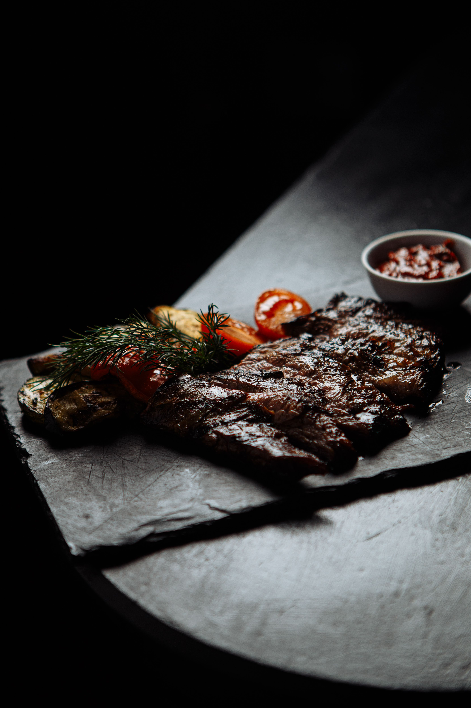
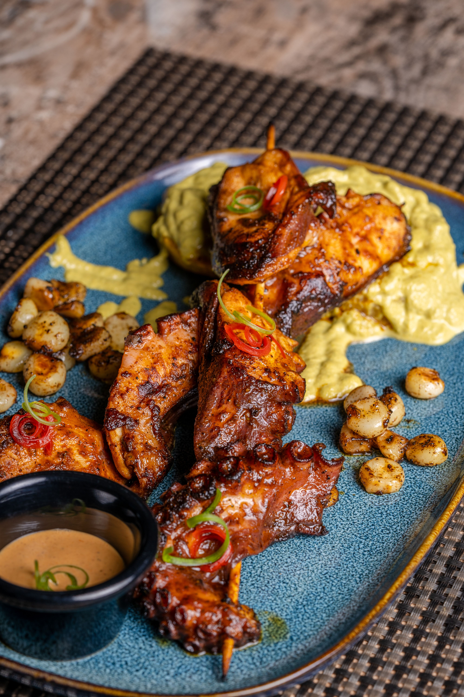

Navban started in 2014 with one wood oven, a handful of borrowed tables, and a short menu that changed with what the market had that morning. We've grown since, but the habit stayed: cook what's good today, keep the plate simple, and let the fire do most of the work.

Fewer ingredients, treated properly, beat a crowded plate. We build each dish around one thing done well and let everything else stay quiet around it.
Produce comes from four farms within thirty miles. Fish is bought off the boat that morning, not off a truck. If a farm has a bad week, the menu changes — not the standard.
A short menu that never feels short. Navban proves restraint can be its own kind of ambition.
Coastal Table Magazine
The kind of neighborhood restaurant every neighborhood wishes it had.
The Portside Herald
Nothing on the plate is there by accident, and nothing on the bill will surprise you either.
Eat Local Weekly